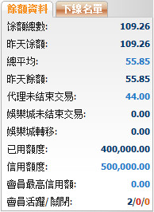
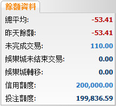

餘額資料
定義:
這是總體報告, 幫助總代理非常了解他/她的代理及會員的當前餘額, 輸贏數額, 支付或收取的數額。

餘額資料
用詞注解:
-
餘額總數: 目前總代理包括轉賬交易的輸贏總額。
-
昨天餘額: 總代理輸贏總額至昨日。
-
總平均: 總代理需要與上線結算的支付或收取的總數額。
-
昨天總平均: 總代理需要與上線結算的支付或收取的總數額至昨日。
-
代理未結束交易: 代理在會員投注額的分擔根據他/她的佔成於進行中/等待中的注單。
-
娛樂城未完成交易: 會員本金總額於待續娛樂城遊戲(此數值只出現在會員將金額調回體育博彩)。
-
娛樂城轉移: 會員從體育博彩轉移至娛樂城的總額
-
已用信用額: 代理已給予他/她的會員的總數額。
-
信用額度: 總代理給予代理的信用額度。
-
會員最高信用額: 代理可給予個別會員的最高信用額度。
-
會員活躍/關閉/暫停: 會員數量為活躍/關閉/暫停。
注:
這個部分也支持總代理進行轉賬操作, 察看進行中的注單, 修改信用額度及修改會員最高信用額度如下:
- 要進行轉賬交易, 點擊昨天餘額數。
- 要查看所有進行中的注單, 點擊未完成交易數額。
- 要修改信用額度, 點擊信用額度數。
- 要修改會員最高信用額, 點擊會員最高信用額數。
如何查看下線的餘額資料
要查看下線的餘額資料, 點擊 "會員" 然後選擇用戶名, 資料如下圖顯示:

會員的餘額資料
用詞註解:
-
餘額總數: 會員的總輸贏。
-
昨天餘額: 會員的總輸贏至昨日.
-
代理未結束交易: 會員總投注額於進行中/等待中的注單。
-
娛樂城未結束交易: 會員投注總額於待續娛樂城遊戲(此數值只出現在會員將金額調回體育博彩)。
-
娛樂城轉移: 會員從體育博彩轉移至娛樂城的總額。
-
信用額度: 代理給予會員的最初信用額。
-
投注額度: 會員用於投注的可用信用額。